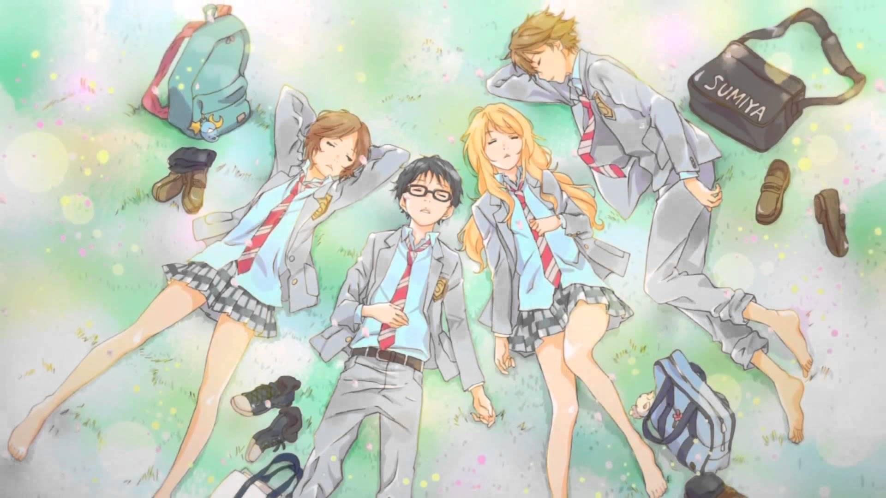

Shigatsu Wa Kimi No Uso:
Mi serie favorita
"I met a girl under a full bloomed cherry blossom and my fate has begun to change."
Con esa frase permíteme introducirte en esta bella historia...
Historia
Kousei Arima es un prodigio en el piano y cualquiera dentro del mundo de la música conoce su nombre; pero cuando su madre y también maestra fallece, se desmorona en la mitad de un recital y desde ese momento es incapaz de oír el sonido de su piano aunque no tenga problemas de oído. Dos años después, Kousei sigue sin tocar el piano y ve el mundo como algo monótono, sin color. Se conformaba con llevar una vida tranquila junto a sus amigos, Tsubaki y Watari, hasta que una chica lo cambia todo. Kaori Miyazono es una chica muy guapa y una gran violinista cuyo carácter queda reflejado en su modo de tocar. Kaori ayudará a Kousei a volver al mundo de la música y a romper con la rígida estructura musical que Kousei ha tenido siempre presente en su vida.
Géneros: Romance, Recuentos de la vida, Drama
Capítulos: 22 + 1 OVA (Official Video Animation)
Autor: Naoshi Arakawa
Kaori tocando el violín junto a Kousei
Personajes

Kousei Arima
Kousei Arima (有馬 公生, Arima Kōsei) es un prodigio del piano y fue conocido por todos en el mundo de la música, pero lo dejó todo debido al shock que le causó la muerte de su madre. Es un estudiante normal de secundaria junto a sus amigos de la infancia Ryota Watari y Tsubaki Sawabe.
Kaori Miyazono
Kaori Miyazono (宮園 かをり Miyazono Kawori) es un personaje principal del manga y anime Shigatsu wa kimi no uso. Es una violinista de 14 años de edad con una personalidad abrumante que arrastra a Kousei a tocar nuevamente el piano.
Tsubaki Sawabe
Tsubaki Sawabe (澤部 椿, Sawabe Tsubaki) es una chica llena de energía que pertenece al club de sóftbol de su escuela. Está en la misma clase que Kaori y es amiga de la infancia de Watari y Kousei Arima, quien además resulta ser su vecino. Tsubaki es bastante buena en los deportes y siempre está preocupada por Kousei, por lo que siempre espera encontrar maneras de darle coraje para que vuelva a tocar el piano como antes.
Ryota Watari
Ryota Watari (渡 亮太, Watari Ryōta) es amigo de la infancia de Tsubaki y Kousei. Es el capitán del club de fútbol de la escuela, es bastante popular entre las chicas. Tiene mucha habilidad para las deportes y a pesar de lo que los demás puedan pensar sobre él, es un chico franco y que va directo al punto.
Openings/Endings
La serie cuenta con 2 temas de apertura (openings) y 2 temas de cierre (endings) que se presentan a lo largo de los 22 capítulos + 1 OVA (Original Video Animation) de la misma.
Hikaru Nara
Interpretado por:
Goose House
Kirakemi
Interpretado por:
wacci
Nanairo Symphony
Interpretado por:
Coalamode.
Orange
Interpretado por:
7!!
Importancia personal
Para mi, estas es una de las historias más bonitas que pude haber visto. Este anime tiene un lugar muy importante en mi corazón. gracias a todo lo que la compone: Historia, personajes, trama y enseñanzas. Puedo decir que fue una de esas historias que me marcó de por vida.
Me enseño a que no importa cuán oscuro sea el panorama, siempre hay un motivo para levantarse y seguir adelante. Solo hay que ver aquello que tenemos en nuestro corazón, y que siempre podemos ser mejores.
Y algo muy importante: Aprender a valorar cada momento de esta vida, sacandole el mayor rendimiento posible, viviendo intensamente, haciendo eso que nos apasiona y amamos, y pasando el tiempo con la gente más importante para uno.
¿Qué estas esperando para darle una oportunidad?
A veces, una historia puede tocar tu alma de una manera que ni siquiera imaginaste. Your Lie in April es una obra que va más allá de la música y el romance; es una celebración de la vida, de la lucha y de la belleza de seguir adelante.
Cada nota, cada mirada, cada emoción en esta serie tiene el poder de cambiarte. No pierdas la oportunidad de vivir este viaje emocional que puede darle un nuevo color a tu vida. La música y el amor te guiarán, y quizás, te descubrirás a ti mismo en el proceso. ¡Espero te guste!
Puede que solo nos espere un oscuro camino nocturno. Pero aún así, quiero seguir adelante, creyendo... que en algún momento, las estrellas empezarán a iluminarlo.
- Kaori Miyazono
Aún en las profundidades más obscuras del océano, un poco de luz siempre perfora hasta ahí.
- Arima Kousei
Puedes estar triste, ser un desastre, o tocar fondo. ¡Pero debes seguir adelante! Así es como la gente como nosotros sale adelante.
- Kaori Miyazono
Hagas lo que hagas, cambies o no, no importa. Tú seguirás siendo tú.